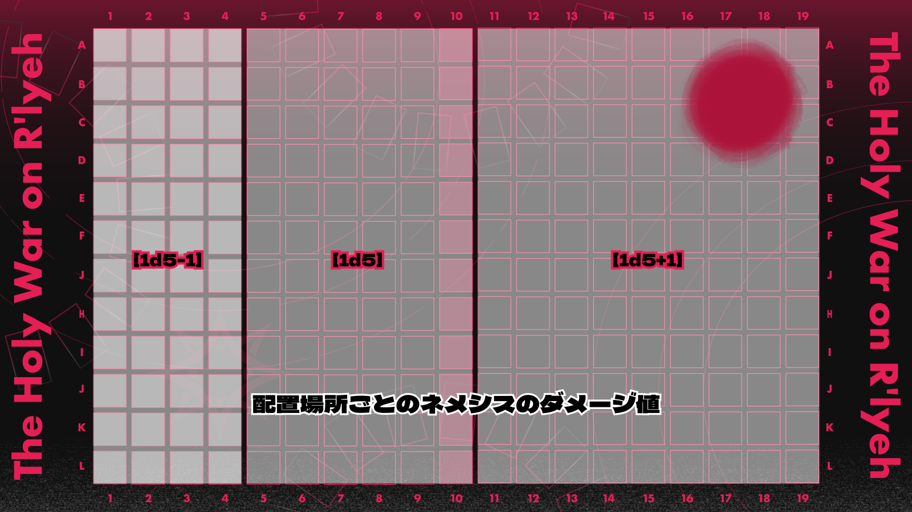

エネミー処理まとめ
ここにはエネミーについて事前把握があると便利なもの、共有設定なためまとまった場所に置いておいた方が確認が便利そうな情報についてまとめて記す。
ネメシスのダメージ範囲

ネメシスのダメージは基本値を［1d5］とし、探索者の配置箇所によって受けるダメージが異なる。
KPは毎ラウンド頭で［1d5］をロールし、［1d5］範囲の探索者にはそのままダメージ値を、初期配置エリアの探索者にはそこから［－1］の値を、中央ラインを越えて進軍している探索者には［＋1］でダメージを与える。
装甲貫通ダメージであるため、盾によるダメージカットは行えず、ネメシス本体以外のエネミーも装甲に関係なく等しく位置に応じたダメージを受ける（ゾスなど一部のエネミーは再生も行う）。
ネメシスからのダメージを軽減できるのは〝塔の壁〟と総統閣下のダメージカットのみ。
〝塔の壁〟の場合は「装甲貫通無効化効果の累計値」が蓄積されていくため注意すること。
人型のエネミーについて
本戦中に登場する人型のエネミーは「深きもの」のみである。
〈マーシャルアーツ〉や〈武道〉の適用範囲はKPに任せられる。
ほかには「模擬戦ルート」での探索者たちや、「演習大会ルート」でのフレデリックも人型として専用技能を所持している探索者にはボーナスを与えてよい。
ただし、フレデリックに関しては本人の体質が神話生物に近いこともあり、ショックロールや気絶は無効であるため注意すること（本戦中の総統閣下も同様）。
エネミーのショックロールについて
エネミーたちはいずれも神話生物であるため、HPが一度に半分以上削れたとしてもショックロールを受けることはない。
また、自動気絶もしない。
シナリオ内でショックロールが適用される存在は探索者のみであり、NPCすらも対象外であると理解していただくとよいだろう。
そのほかNPCについては前項のとおり、ショックロールが発生しない。
深きものやサメのPOWを吸い取ったら
ほとんど想定されていないが、もちろん深きものやサメのPOWについては【月】の力で吸い取っていただいても構わない。
本シナリオでは深きものと混血種のサメについてはPOWがなくなる＝戦闘不能になるものとしている。
ネメシスという絶対的な敵を用意することによって値はある程度調整しているつもりだが、【月】がネメシスに構わず雑魚処理に勤しんでしまうと本人も気づかぬうちに他探索者の出番を奪ってしまう可能性は往々にして有り得るので、KP判断で雑魚相手のPOW吸収についても無効としてよい。
深きものの射程について
通常の移動でハンティング・スピアの攻撃範囲に入った場合、深きものは移動よりもハンティングスピアでの攻撃を優先することを想定している。
次のラウンドで移動をしたあとはかぎ爪とハンティング・スピアで攻撃方法の選択を行うだろう。
探索者の出目が良すぎてエネミーがすぐに死ぬ
追加のエネミー（特に深きものやサメ）はどんどん追加していただいて問題ない。
逆に増やしすぎたなと思ったら、ゾスに轢かせるなどすれば容易に調整ができるだろう。
エネミーのステータスは、シナリオに記載のあるものからランダムで決定すること。
また、追加されたエネミーについてはすでに倒された存在とは別個体であるため、ステータスが知りたい場合は【世界】で新たに情報開示を求める必要がある。